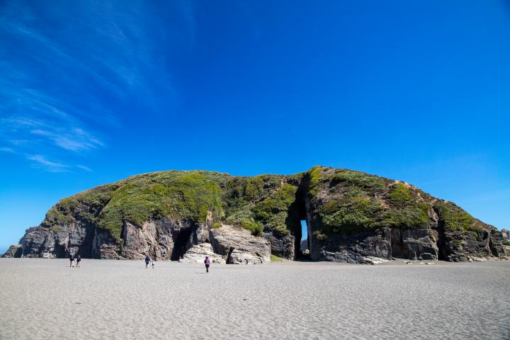
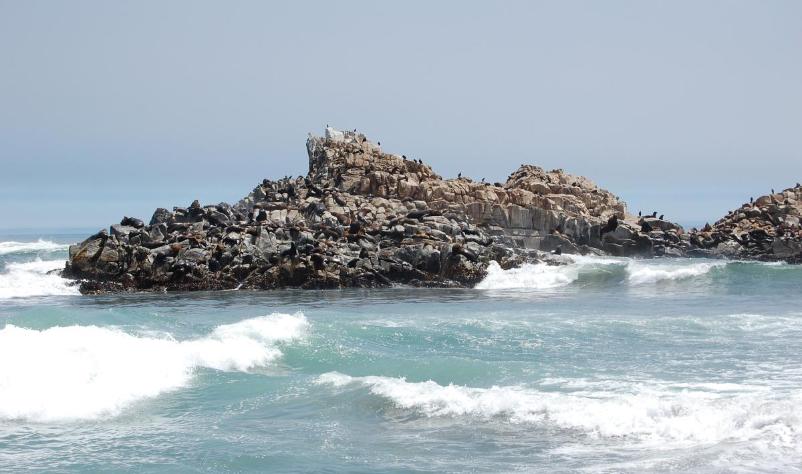
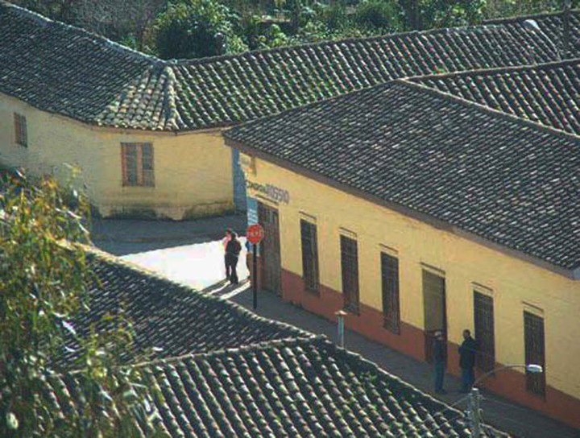

Natural Landmark
Iglesia de Piedra
Discover one of Cobquecura's most recognizable coastal rock formations.
View more placesDiscover Ñuble
Explore a coastal town where beaches, wildlife, history, and rural landscapes come together.
Explore PlacesCobquecura is a coastal town in the Ñuble Region of Chile. It is known for its Pacific beaches, unique rock formations, wildlife, historic architecture, and peaceful rural surroundings.
Whether you enjoy nature, history, photography, or outdoor activities, Cobquecura offers many places to explore.

Natural Landmark
Discover one of Cobquecura's most recognizable coastal rock formations.
View more places
Wildlife
A coastal area where visitors can observe South American sea lions.
View more places
History
Explore traditional architecture and the historic character of Cobquecura.
View more placesLearn more about what to do, when to visit, and how to start planning your experience in Cobquecura.
Plan Your Visit